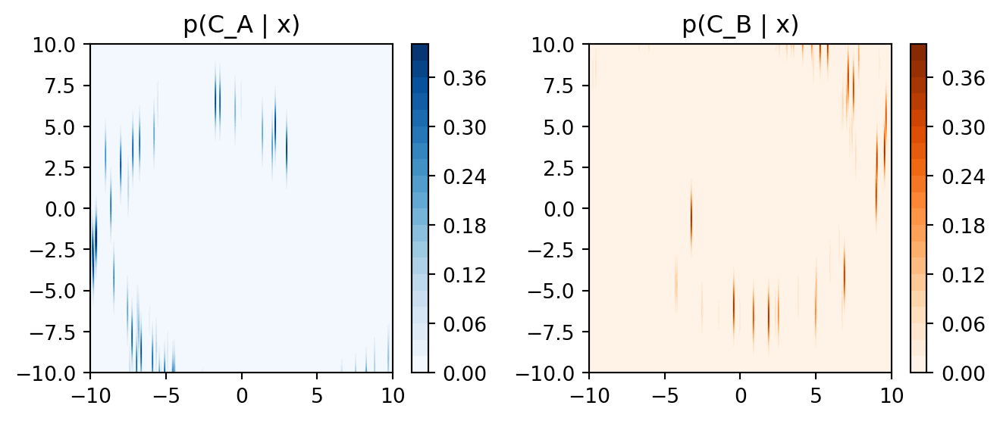
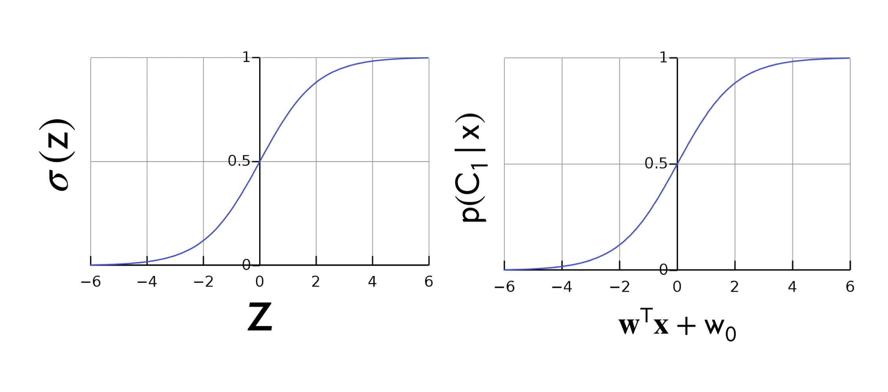

Linear features are those that can be effectively separated by a straight line, but in this case, you would need a more complex decision boundary (e.g., a circular or nonlinear boundary) to separate the two classes accurately.
In binary classification, linearly separable data is a common assumption, which means that the classes can be separated by a straight line or a hyperplane in higher dimensions. In the provided code, the data is not linearly separable because a simple straight line cannot accurately distinguish between the two classes.
1 Plotting \(p(C_k|x)\) (2nd plot)
Code
# Generate a grid of x and y coordinatesx_range = np.linspace(-10, 10, 400)y_range = np.linspace(-10, 10, 400)xx, yy = np.meshgrid(x_range, y_range)# Calculate p(C_A | x) and p(C_B | x) for each point on the grid# Note: This is a simplified approach and doesn't use the actual Naive Bayes modelp_C_A_given_x = norm.pdf(np.linalg.norm([xx - np.cos(theta) * (2* theta + np.pi), yy - np.sin(theta) * (2* theta + np.pi)], axis=0))p_C_B_given_x = norm.pdf(np.linalg.norm([xx - np.cos(theta) * (-2* theta - np.pi), yy - np.sin(theta) * (-2* theta - np.pi)], axis=0))# Plot the contour plotsplt.figure(figsize=(7, 3))plt.subplot(121)plt.contourf(xx, yy, p_C_A_given_x, cmap='Blues', levels=20)plt.title('p(C_A | x)')plt.colorbar()plt.subplot(122)plt.contourf(xx, yy, p_C_B_given_x, cmap='Oranges', levels=20)plt.title('p(C_B | x)')plt.colorbar()plt.tight_layout()plt.show()

The contour plots show the probability values over the grid of x and y coordinates, with color indicating probability levels. The higher the probability, the darker the color.
Since the data is not generated according to a real statistical model, the visualized distributions are more conceptual than precise.
In a real Naive Bayes model, you would estimate p(C_k | x) using the actual data and the independence assumption. The visualization would depend on the data, features, and model parameters.
The downside with the Perceptron is that there is no probabilistic interpretation. We want to link the linear model to class conditional probabilities
i.e we would like to say there is 50% that this belongs to class K \[
\begin{align}
p(C|x)
\end{align}
\]
Now, lets talk about Logistic Regression
Perceptron and Logistic Regression is a type of directly parametrize linear model
The only difference between these two its how you train the model.
3 Deriving Logistic Regression
Note: We would be talking about Binary Classification
Here the want to link linear model to probabilities to get Logistic Regression
When we set up Bayes Classifiers, We look at the ratio of probabilities.
Here we are saying that this ratio would not work because i.e if we would predict a negative value for this ratio that would mean that either the denominator or denominator would be negative. But negative probables cannot happen.
The solution, make compute the \(\ln\)
Note that at the decision boundary meaning when \(p(C_1|x)=p(C_2|x)\) we would have that the ratio is zero.
Now, rearranging the expression above:

Figure 1: Sigmoid
4 Logistic Regression: Making Predictions
5 Counting Parameters
How much more parameter efficient is logistic regression vs a Gaussian classifier? (assume the feature vector has D dimensions)
Logistic regression
Num of parameters: \(D+1\) one weight for each feature value and then you have the bias weight.
Linear Discriminant Analysis
Here we defined the Gaussian likelihoods
Num of parameters: \((2D)+[D(D - 1)2 + D]\)
How many parameters do the means of these gaussian likelihood have? \(2D\): because D dimensions per each mean and we have 2 likelihoods because we are doing binary classifier
How many parameters the covariance matrix have? Assume we are doing LDA, so the covariance matrix are shared. \(D^2\) Naively but in this case, the covariance matrix has this symmetry structure so \(D*D - D/2\) is the off diagonal matrix and we add \(D\) more for the diagonal
The last term, we have means, we have covariances. We need the bias because maybe we can have unbalance data so we also want this to balance the data.
In a bayes classifier we fixed our unbalance data with the prior. So we have one parameter for the prior
That means for the LDA we need around \(D^2\) as compared to Logistic Regression \(D+1\) to get a classification example.
6 Learning via Log-Likelihood
We talked about our Logistic Regression model, now lets see how do we fit into our data.
7 Learning via Log-likelihood
We assume our data are ID.
Now that we have our labels which are binary we could use a Bernouli distribution to model this.
Where, \(\pi\) represents the probability of sucess and \(t\) represents our possible outcomes. In this case our outcomes would be to belong to class \(0\) if \(C_0\) or \(1\) if \(C_1\)
Where, \(\sigma(\textbf{w}^T\textbf{x}_n)^{t_n}\) is equal to \(p(C1|x)\). See the graph of the sigmoid Figure 1
Now lets take the log of this Likelihood
To compute the Error we have:
This is equation is also called cross-entropy loss
if the label \(t_n=1\) then second term will go away. Because we want to have the error to go to zero, then we need to make the log to go to zero. This happens when \(log(1)\) thus the \(\sigma(\textbf{w}^T\textbf{x}_n)\) needs to equal one. This will only happen when the value of \(\textbf{w}^T\textbf{x}_n\) is large enough so that the \(\sigma()\) computes it to one, meaning that \(p(C_1|x)=1\) which means we have predicted the correct label. Recall \(t_n=1\).
The other way around, the truth label is \(t_n=1\) but the output of \(\sigma(\textbf{w}^T\textbf{x}_n)~0\) so close to zero which means the \(\ln(0.00001)=-11\) would be negative which then recall we have a \(-\) minus sign which means we would be making a big error of \(11\).
\(E(w)\) is convex in \(\textbf{w}\) but unlike linear regression there is no analytical solution [1]. Which means if we take the derivative and solve for \(w\) we would get stuck.
What is convex decision boundaries?
if you take any two points within the boundary, the line segment connecting those points lies entirely within the boundary as well
8 Class-Entropy Loss
8.1 Comparing Logistic Regression and Square Regression
Logistic Regression is on the green line, Least Square Regression the purple.
If you have outliers, LEast Square changes its boundary so its sensible to outliers
Logistic Regression is not, it kept the original boundary
9 Gradient Descent: Variants
Note, because we saw that the Error of the Log-likelihood of Logistic Regression cannot be solved analytically then we turn into gradient descent
Because the above summation is expensive then we got variants.
Batch: Use all N data points
Stochastic: Use one data point to approximate sum
Here we pick a random point \(i\) and we multiply by \(N\) to replicate the magnitude of learning rate. This is to keep same scale as the full gradient descent formula we see above. In other words this is just to conserve the magnitude of the \(\eta\) value
Mini-Batch: Use B data points where 1 < B < N. Usually B much less than N (B << N)
9.1 Gradient Descent: Variants Performance
10 Gradient Calculation
11 FAQ
What are linear features in binary classification?
In binary classification, linear features refer to features that can be effectively separated by a straight line (or a hyperplane in higher dimensions) when plotting them on a graph. These features are sometimes called linearly separable features because you can draw a line that cleanly separates the two classes, making it easy for a linear classifier like logistic regression or a linear support vector machine (SVM) to classify the data accurately.
Here’s an example to illustrate linear features in binary classification:
Suppose you are working on a binary classification problem to predict whether an email is spam (class 1) or not spam (class 0) based on two features: the number of words in the email and the number of times the word “free” appears in the email.
You collect data on various emails, and when you plot this data on a graph with the number of words on the x-axis and the frequency of the word “free” on the y-axis, you notice that spam emails tend to have fewer words and a higher frequency of the word “free,” while non-spam emails tend to have more words and a lower frequency of the word “free.”
Here’s a simplified example:
Spam Email A: 10 words, “free” appears 8 times
Spam Email B: 12 words, “free” appears 10 times
Non-Spam Email X: 20 words, “free” appears 2 times
Non-Spam Email Y: 18 words, “free” appears 1 time
If you plot these data points on a graph, you might observe that you can draw a straight line that effectively separates the spam emails (class 1) from the non-spam emails (class 0). In this case, the number of words and the frequency of the word “free” are linear features, as they allow for a linear separation of the two classes.
Here’s what the separation might look like (though in reality, the data might be more complex):
Code
import matplotlib.pyplot as plt# Data pointsspam_emails = [(10, 8), (12, 10)]non_spam_emails = [(20, 2), (18, 1)]# Unpack the data into separate listsspam_x, spam_y =zip(*spam_emails)non_spam_x, non_spam_y =zip(*non_spam_emails)# Create the scatter plotplt.scatter(spam_x, spam_y, label='Spam Emails', marker='*')plt.scatter(non_spam_x, non_spam_y, label='Non-Spam Emails', marker='o')# Add labels and legendplt.xlabel('Number of Words')plt.ylabel('Frequency of "free"')plt.legend()# Add a straight line for separation (in this case, manually defined)plt.plot([15, 15], [0, 12], linestyle='--', color='gray')# Set plot limits and displayplt.xlim(0, 25)plt.ylim(0, 12)plt.title('Linearly Separable Data for Binary Classification')plt.grid(True)plt.show()
In this example, you can see that a straight line can be drawn to separate the two classes, making the features (number of words and frequency of “free”) linear features for this binary classification problem.